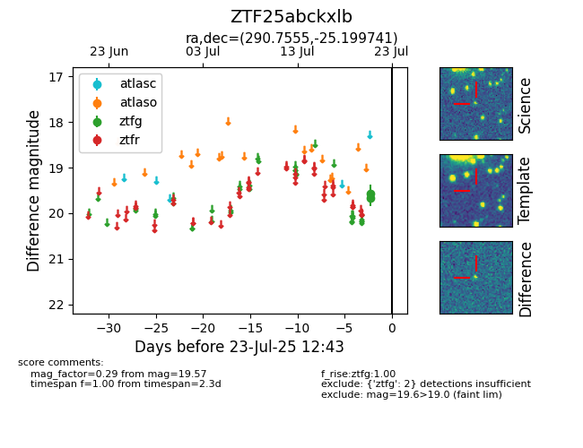

Target ZTF25abckxlb at 2025-07-23 12:43, see:
FINK: fink-portal.org/ZTF25abckxlb
Lasair: lasair-ztf.lsst.ac.uk/objects/ZTF25abckxlb
ALeRCE: alerce.online/object/ZTF25abckxlb
alt names
ZTF25abckxlb (ztf,fink)
coordinates:
equatorial (ra, dec) = (290.7555,-25.19974)
galactic (l, b) = (13.1554,-17.74451)
photometry
last ztfg=19.57
2 ztfg detections
